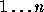

| Sentence/Phrase Generator |
Write a program that generates English language phrases and sentences conforming to the following rules:
<sentence> ::= <trans-sentence> | <sentence> ::= <intrans-sentence>
<trans-sentence> ::= <subject> <verb-phrase> <object> <prep-phrase>
<intrans-sentence> ::= <subject> <intrans-verb-phrase>
<prep-phrase>
<subject> ::= <noun-phrase>
<object> ::= <noun-phrase>
<noun-phrase> ::= <article> <modified-noun>
<modified-noun> ::= <noun> | <modifier> <noun>
<modifier> ::= <adjective> | <adverb> <adjective>
<verb-phrase> ::= <trans-verb> | <adverb> <trans-verb>
<intrans-verb-phrase> ::= <intrans-verb> | <adverb>
<intrans-verb>
<prep-phrase> ::= <preposition> <noun-phrase> | <empty>
<noun> ::= man | dog | fish | computer | waves
<trans-verb> ::= struck | saw | bit | took
<intrans-verb> ::= slept | jumped | walked | swam
<article> ::= the | a
<adjective> ::= green | small | rabid | quick
<adverb> ::= nearly | suddenly | restlessly
<preposition> ::= on | over | through
<empty> ::= ""
For example, the first two lines say that to generate a sentence, one may generate a ``trans-sentence'' or an ``intrans-sentence''. A transitive sentence, according to the third rule, consists of a ``subject'', followed by a ``verb-phrase'', followed by an ``object'', followed by a ``prep-phrase''. Similarly, the next-to-last rule indicates that a ``preposition'' can be any of the three words on, over, or through.
Your program should read from the input a number of requests for various kinds of phrases. Each request may be for any of the phrase names appearing on the left hand side of the above rules. It should then attempt to generate the requested phrase by applying these rules until all of the <...> have been replaced with appropriate words.
In many cases, you will face a choice of alternate rules for expanding a phrase name. In these cases, you should make a choice as follows: Suppose that this is the such choice that you have faced since the start of execution of your program, and that you must choose one of n rules for expanding a given kind of phrase. Let the rules for that phrase be numbered from  in the order of appearance above, and then choose rule number .
The input will consist of an unspecified number of lines. Each line will contain, left-justified, a phrase name corresponding to one of the names appearing on the left-hand-side of the rules above (without the surrounding brackets).
For each phrase named in the output, print a single line containing the expansion of that phrase according to the above rules. Each word in the phrase should be separated from the others by a single space.
sentence noun sentence
the small dog restlessly jumped through the quick dog fish a dog took the quick computer